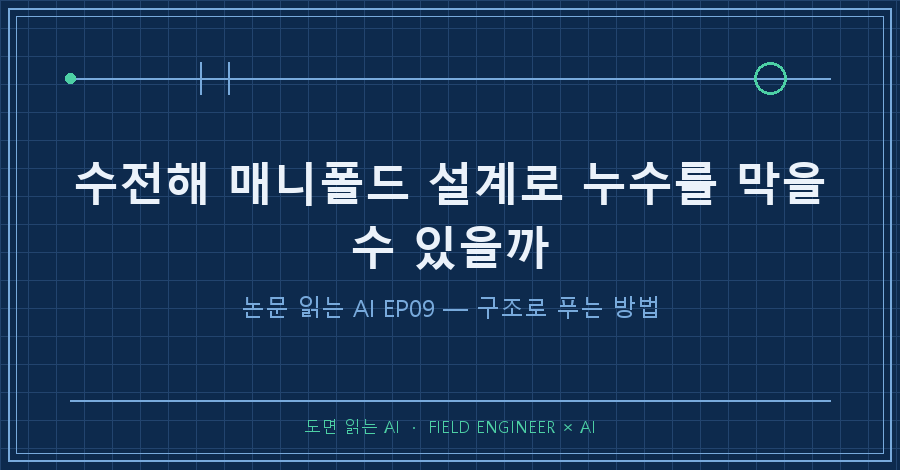
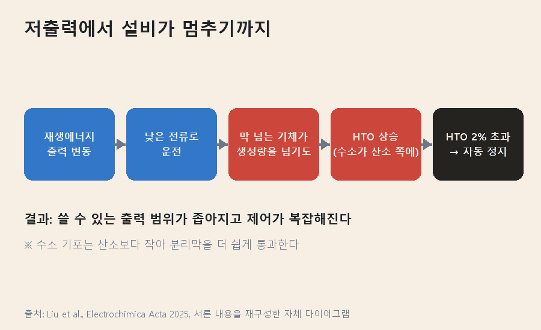
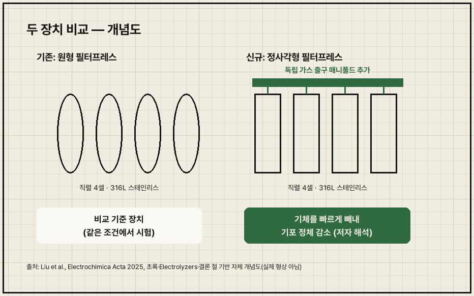
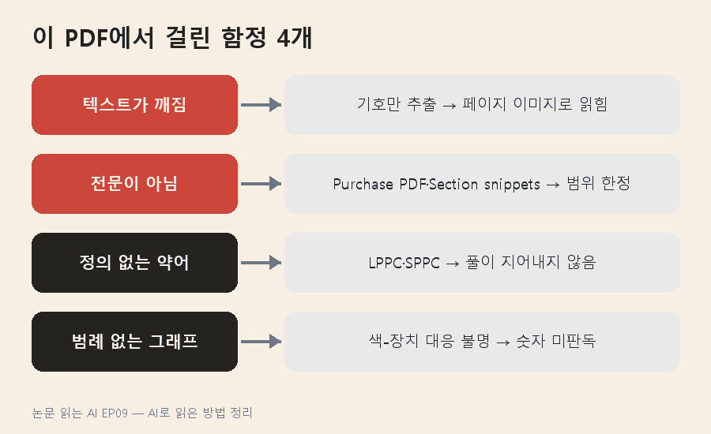

수전해 매니폴드 설계만 바꿔도 기생전류와 크로스오버를 줄일 수 있다는 실험 결과가 있습니다. 기체가 빠져나갈 출구 매니폴드를 따로 낸 정사각형 전해조가 기존 원형 설계보다 낮은 전류에서도 가스 순도와 패러데이 효율이 높았어요 [Liu 2025, Abstract].
그 '낮은 전류'는 10 mA/cm²까지 내려갑니다 [Liu 2025, Abstract].
'논문 읽는 AI' 9편이에요. 지난 편이 압력·온도라는 운전 손잡이였다면, 이번엔 손잡이가 아니라 구조 자체를 고칩니다. 중국 연구팀이 2025년 6월 Electrochimica Acta에 낸 논문(doi: 10.1016/j.electacta.2025.146186)을 읽었어요. 다만 이번 PDF는 전문이 아니라 출판사 미리보기(초록·서론·절 발췌)였습니다. 그래서 아래 내용은 미리보기에 실린 범위만 옮겼어요.
1. 이 논문은 무엇을 풀려 했나요
낮은 출력에서 수소와 산소가 섞여 설비가 멈추는 문제입니다. 알칼라인 수전해는 양극과 음극 사이 분리막으로 두 기체를 나누지만, 기체가 막을 넘어가는 크로스오버를 완전히 없앨 수는 없어요 [Liu 2025, 서론].
- 크로스오버: 한쪽 칸의 기체가 분리막을 넘어 반대쪽으로 섞여 드는 현상.
- HTO(산소 중 수소 농도): 산소 쪽에 수소가 얼마나 섞였는지를 나타내는 비율.
- 매니폴드: 여러 셀에 전해액을 나눠 주고, 기체와 전해액을 모아 내보내는 공용 통로.

논문 서론이 짚는 고리는 이렇습니다 [Liu 2025, 서론].
1. 재생에너지는 출력이 오르내려서 전해조가 낮은 전류로 도는 시간이 생겨요.
2. 낮은 전류에서는 막을 넘어오는 기체 속도가 전극에서 기체가 생기는 속도를 넘어서기도 합니다.
3. 수소는 기포가 산소보다 작아 막을 더 쉽게 통과하고, HTO가 위험 수준까지 오를 수 있어요.
4. 보통 HTO가 2%를 넘으면 시스템이 자동 정지합니다. 결국 쓸 수 있는 출력 범위가 좁아져요.
2. 왜 막이 아니라 유로를 고쳤나요
막을 바꾸는 길은 비용·내구성 벽이 있고, 크로스오버는 칸 안에 기포가 고이는 정도와 관련이 깊기 때문입니다 [Liu 2025, 서론]. 논문이 정리한 선행 접근은 셋이에요.
| 접근 | 장점 | 걸림돌 | 근거 |
|---|---|---|---|
| 분리막 개선(AEM 등) | 기체 차단력이 기존 막보다 훨씬 강함 | 제작비, 장기 화학·기계 안정성 | [Liu 2025, 서론] |
| 분리 수전해(DWE) | 수소·산소 발생 칸을 아예 나눔 | 매개 전극 안정성, 전류밀도 한계, 제어 복잡 | [Liu 2025, 서론] |
| 유로 설계 개선 | 기포 정체 구역을 줄임 | 시뮬레이션 위주, 실측 데이터 부족 | [Liu 2025, 서론] |
유로 쪽 선행 시뮬레이션 숫자도 서론에 인용돼 있어요. 입구 3개 설계는 입구 1개보다 출구 수소 농도를 22% 낮췄고, 입·출구 3개씩인 구조는 수소 생산 3.21% 증가, 비에너지 소비 2.95% 감소로 계산됐습니다 [Liu 2025, 서론에서 인용한 선행연구]. 저자들은 이런 연구가 에너지 소비 절감에 치우쳐 크로스오버는 덜 다뤘고, 실제 장치 실험 데이터도 적다고 봤어요 [Liu 2025, 서론].
3. 수전해 매니폴드를 어떻게 바꿨나요
바이폴라 플레이트 출구 구조를 고쳐 기체만 빼내는 독립 매니폴드를 추가했습니다 [Liu 2025, 결론]. 같은 조건에서 비교하려고 두 대를 직접 만들었어요 [Liu 2025, Electrolyzers 절].

| 항목 | 내용 |
|---|---|
| 비교 대상 | 새 정사각형 필터프레스형 vs 기존 원형 필터프레스형 |
| 셀 구성 | 엔드플레이트 2장 + 바이폴라 플레이트 3장 = 직렬 4셀 |
| 재질 | 316L 스테인리스강 |
| 기액 분리 | 양쪽 엔드플레이트 밖 분리탱크 2개, 수소측·산소측 순환 루프를 따로 구성 |
| 순환 방식 | 전해 중 생긴 기포가 만드는 자연대류 |
| 시험 범위 | 10~400 mA/cm² |
(출처: [Liu 2025, Electrolyzers·Design of the electrolyzer 절, 서론])
설계 의도를 저자들은 유체 순환 강화와 기생전류 억제의 균형이라고 표현합니다 [Liu 2025, 서론]. 두 목표를 한 문장에 묶은 데는 이유가 있어요. 지난 편들(EP05~08)에서 본 것처럼 매니폴드는 기체와 전해액이 지나는 길이면서 기생전류가 흐르는 통로이기도 하니까요.
4. 무엇을 알아냈고, 한계는 무엇인가요
정사각형 설계가 전 구간에서 원형보다 나았다는 게 결론입니다 [Liu 2025, Abstract·서론].
- 10 mA/cm²처럼 낮은 전류에서도 가스 순도와 패러데이 효율(넣은 전기 중 실제 기체가 된 비율)이 높았어요.
- 높은 전류에서는 전해 전압이 낮아졌습니다.
- 저자들은 원인을 기체가 빨리 빠져 기포 정체가 줄어든 것으로 봅니다.
- 기생전류를 LPPC와 SPPC 두 종류로 나눠 순도·효율에 주는 영향을 분석했다고 밝혀요.
한계도 분명합니다.
- 미리보기 범위: 순도·효율의 구체 수치, LPPC·SPPC의 정의, 독립 매니폴드가 기생전류를 억제하는 원리는 이 PDF에 없어요. 그래서 이 글에도 넣지 않았습니다.
- 4셀 실험 장치: 셀 4장을 직렬로 쌓은 장치이고 [Liu 2025, Electrolyzers 절], 대형 스택에서 같은 효과가 나는지는 미리보기에서 확인되지 않아요.
- 비교 기준: 비교 상대는 연구팀이 같은 조건으로 만든 원형 장치입니다 [Liu 2025, Electrolyzers 절].
5. AI로 읽을 때 어디서 막혔나요
이번엔 숫자보다 문서 자체에서 걸렸어요. 함정 넷과 그걸 넘은 방법입니다.

텍스트가 깨져 나온다. PDF에서 글자를 뽑으니 !"#$% 같은 기호만 나왔어요. 웹페이지를 인쇄한 PDF라 글꼴 인코딩이 깨진 경우입니다. 페이지를 이미지로 바꿔 AI에게 보여 주는 쪽으로 돌렸어요.
전문이 아니다. 'Purchase PDF', 'Organizational access' 문구와 'Section snippets' 제목이 있었어요. 문장이 '…'로 끊긴 절도 여럿입니다. 이걸 놓치면 AI는 없는 본문을 채워서 요약하기 쉬워요.
정의 없는 약어. LPPC·SPPC는 초록에 이름만 나오고 풀이가 없어요. 그럴듯하게 풀어 쓰기 가장 쉬운 자리라, 풀이 없이 이름만 옮겼습니다.
범례 없는 그래프. 그래픽 초록에 순도·효율 곡선 두 개가 있지만 어느 색이 어느 장치인지 표시가 없어요. 그래서 그래프에서 숫자를 읽지 않았습니다. 서론의 22%·3.21%도 이 논문 결과가 아니라 인용한 선행연구 숫자라 출처를 따로 달았어요.
네 개를 잡은 질문입니다.
1) 이 PDF가 전문인지 미리보기인지 먼저 판정해. 근거 문구를 인용해.
2) 본문이 '…'로 끊긴 절을 목록으로 뽑아. 그 뒤 내용은 추정하지 마.
3) 정의가 없는 약어·기호를 표시해. 풀이를 지어내지 마.
4) 숫자마다 '이 논문 결과'인지 '인용한 선행연구'인지 구분해.요약을 맡기기 전에 "이 문서에 무엇이 없는가"부터 묻는 게 핵심이에요. 빈칸을 먼저 표시해 두면 AI가 그 빈칸을 메우지 못합니다.
6. 읽다 보면 생기는 질문 3개
Q. 수전해 매니폴드를 키우면 무조건 좋은가요?
아니요. 논문은 유체 순환 강화와 기생전류 억제의 균형을 목표로 잡았어요 [Liu 2025, 서론]. 지난 편들에서 봤듯 매니폴드는 기생전류가 흐르는 통로이기도 해요(EP05~08).
Q. 크로스오버는 왜 낮은 출력에서 더 심해지나요?
낮은 전류에서는 막을 넘어오는 기체가 전극에서 새로 생기는 기체보다 많아질 수 있어서예요 [Liu 2025, 서론]. 섞인 비율이 커지면 HTO 2%에 걸려 정지합니다.
Q. 막을 좋은 걸로 바꾸면 되지 않나요?
AEM 같은 막은 차단력이 훨씬 강하지만 제작비와 장기 안정성이 과제로 남아 있다고 논문은 정리해요 [Liu 2025, 서론].
---
한 줄로 줄이면, 이번 논문은 기체가 머물 틈을 줄이는 구조로 크로스오버와 누수를 함께 다뤘어요. 미리보기만으로는 원리까지 못 봤다는 것도 정직하게 남겨 둡니다.
다음 편은 누수가 효율만 깎는 게 아니라 부식까지 만드는 이야기예요. 여러분이 AI에게 맡긴 PDF, 전문이었는지 확인해 본 적 있나요?
논문을 AI로 읽을 때 쓰는 질문 목록은 makefield.ai에 모아 두고 있어요.